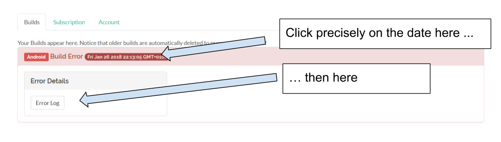
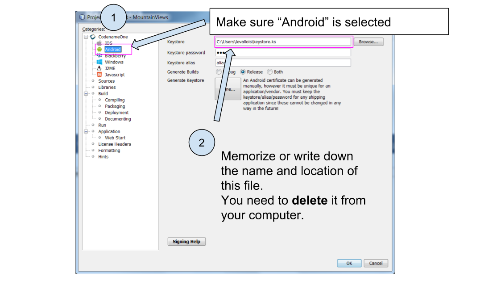

Caused by: java.io.IOException: Keystore was tampered with, or password was incorrect at com.android.ide.common.signing.KeystoreHelper.getCertificateInfo(KeystoreHelper.java:177) ... 78 more Caused by: java.security.UnrecoverableKeyException: Password verification failed ... 79 more
CODAPPS
Some reasons your build can fail - and how to fix it
last modified: 2018-01-28
'Escape' or 'o' to see all sides, F11 for full screen, 's' for speaker notes
1. Builds failing in NetBeans
2. Builds failing on the Codename One website
When you sent your build successfully from NetBeans, it arrives on Codename One servers. There, it gets transformed into an Android app or an iPhone app, depending on what you requested.
A number of reasons can make your build terminate with an error at this stage.
Login to www.codenameone.com, go on the dashboard and check the status of your build:

Figure 1. Checking the result on the website of Codename One
As you see, the build of this Android app failed. What happened?
To do a diagnostic, click on the date and time on the red display and then click on "Error log" to open the error message:

Figure 2. Opening the error message after a failed build
The text that appears is typically very long and intimidating. The good news is, we are usually just interested in the lines at the bottom.
Scroll down to the bottom.
Your builds might have failed for a number of reasons. Here are common causes:
a. Error due to bad password / certificate in Android build
The last lines of an error log can look like:
BUILD FAILED
Total time: 46.953 secs
Stopped 0 compiler daemon(s).
Received result Failure[value=org.gradle.initialization.ReportedException: org.gradle.internal.exceptions.LocationAwareException: Execution failed for task ':packageRelease'.] from daemon DaemonInfo{pid=8711, address=[20966e69-788d-4312-85ec-51ba5256d4d3 port:35105, addresses:[/0:0:0:0:0:0:0:1%lo, /127.0.0.1]], idle=false, context=DefaultDaemonContext[uid=e3726fd9-57b8-4356-8d5a-71035770d689,javaHome=/home/ec2-user/jdk1.8.0_45,daemonRegistryDir=/home/ec2-user/.gradle/daemon,pid=8711,idleTimeout=120000,daemonOpts=-XX:MaxPermSize=512m,-XX:+HeapDumpOnOutOfMemoryError,-Xmx2048m,-Dfile.encoding=UTF-8,-Duser.country=US,-Duser.language=en,-Duser.variant]} (build should be done).Can you spot the error? It is mentioned before "Build Failed":
Caused by: java.security.UnrecoverableKeyException: Password verification failed
Apparently, there is a problem with the password of my certificate.
This error typically happens when you tried multiple times to create a certificate for your app.
The solution is simple:
Open the Codename One properties of the project:

Figure 3. Accessing the properties of your project
Go to the Android properties and take the name and location of the "keystore.ks" file indicated here:

Figure 4. Find this file on your computer and delete it
Now, redo the steps of creating a certificate for Android apps, in the lesson of this module.
Because you just deleted the "keystore.ks" file, you will start from a clean state and your password issues should be solved.
3. Still stuck with a failed build?
If none of the above proved useful, go on Github and review issues posted by the other participants to this course.
If you can’t find an answer to your problem on Github, post a new issue describing your problem and you will get some help!
The end
Questions? Want to open a discussion on this lesson? Visit the forum here (need a free Github account).
Find references for this lesson, and other lessons, here.
Licence: Creative Commons, Attribution 4.0 International (CC BY 4.0). You are free to:
copy and redistribute the material in any medium or format
Adapt — remix, transform, and build upon the material
⇒ for any purpose, even commercially.
 This course is designed by Clement Levallois.
This course is designed by Clement Levallois.
Discover my other courses in data / tech for business: http://www.clementlevallois.net
Or get in touch via Twitter: @seinecle